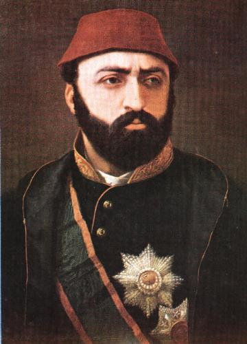

|
 |
SULTAN ABDÜLAZİZ Güreş, cirit ve av sporlarına meraklı olan padişahın tahtta kaldığı sürece en çok üzerinde çalıştığı konu Osmanlı Donanması'nın modernizasyonu idi. Bu nedenle o dönemlerde Avrupa devletlerinden alınan kredilerin çoğu bu konuda harcandı. Sayısı gün geçtikçe artan Osmanlı Ordusu'nun askerlerine yetecek dönemin son model top ve tüfeklerin de sağlanması Abdülaziz döneminde gerçekleşmiştir. |